Doğal soğuk hava depoları
Yeraltı depo açımı, giriş düzenlemeleri ve işletmeye hazırlık çalışmaları.
Nevşehir · 2004'ten beri
Kayadan oyma otellerden doğal soğuk hava depolarına; hafriyat, yıkım ve ağır nakliyede güçlü araç parkurumuzla güvenilir çözümler üretiyoruz.
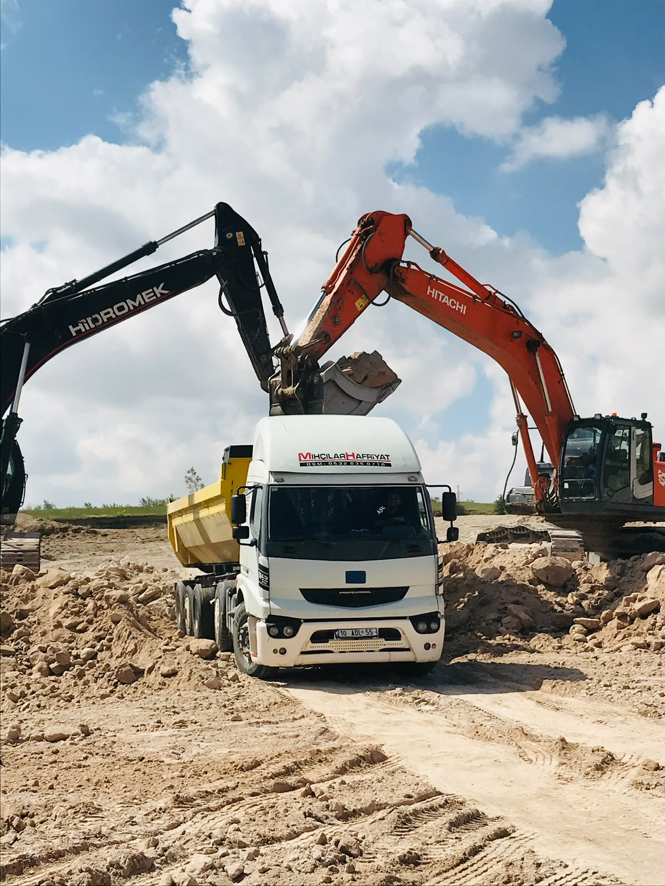
Hizmetlerimiz
İşin kapsamını ve saha koşullarını birlikte değerlendirir; planlı ekip, doğru makine ve düzenli sevkiyatla süreci yönetiriz.
Yeraltı depo açımı, giriş düzenlemeleri ve işletmeye hazırlık çalışmaları.
Kayalık arazilerde kontrollü kazı, alan açımı ve şantiye hazırlığı.
Kazı, dolgu, tesviye, taş-kum temini ve arazi düzenleme.
Kontrollü yıkım, moloz yükleme ve temiz saha teslimi.
Yeraltı alanları için havalandırma ve ters baca uygulamaları.
Makine, ekipman ve yüklerin planlı, güvenli sevkiyatı.
Araç parkurumuz
Geniş araç parkurumuz; büyük hacimli hafriyat, yeraltı depo açımı ve ağır sevkiyat işlerinde süreklilik sağlar.
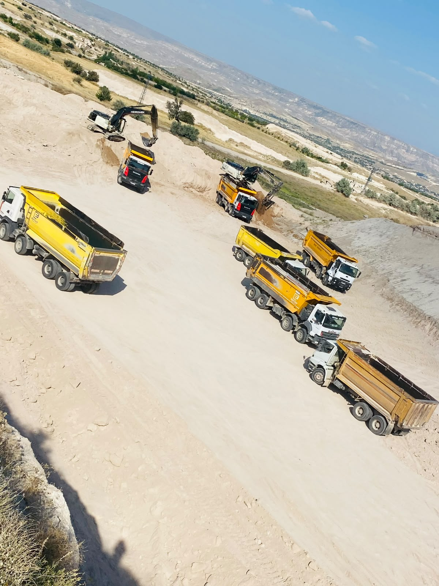
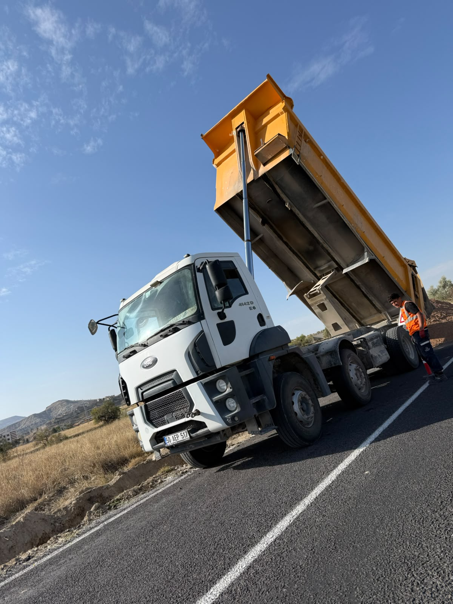
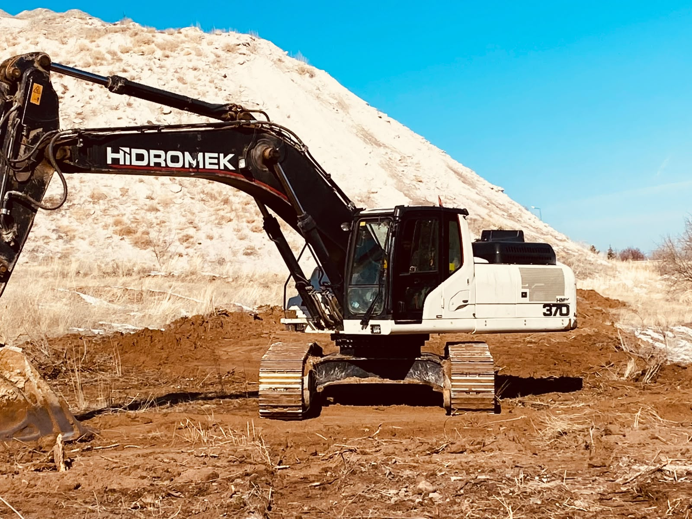
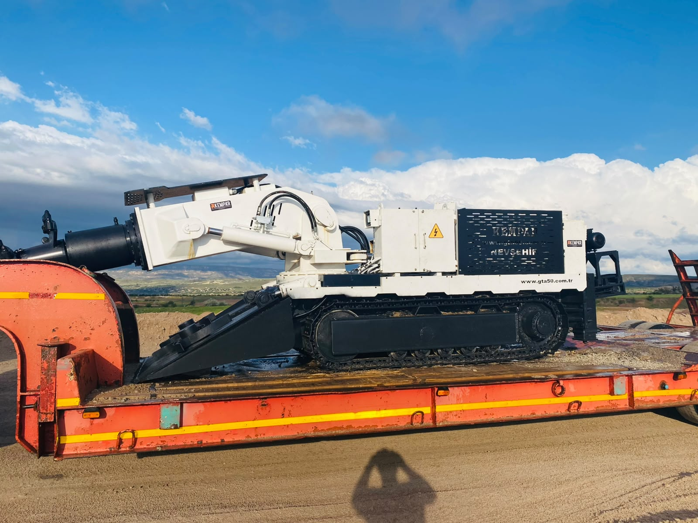
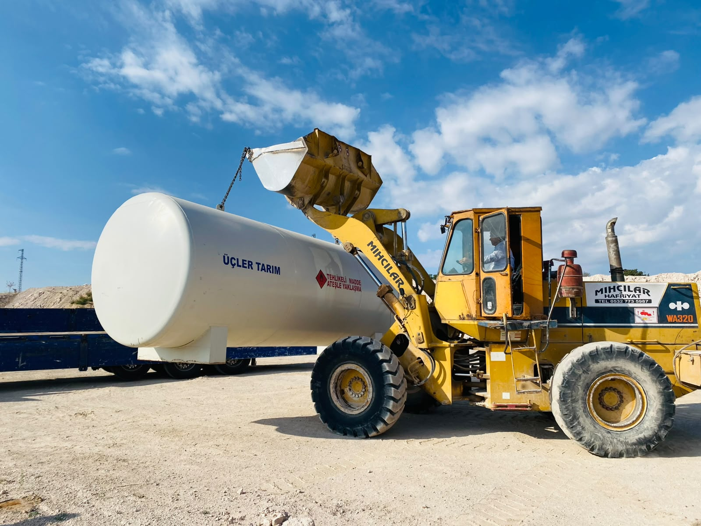
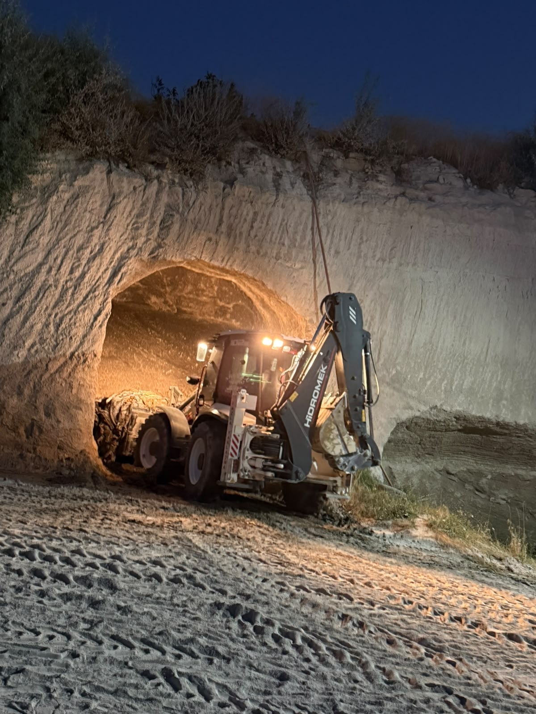
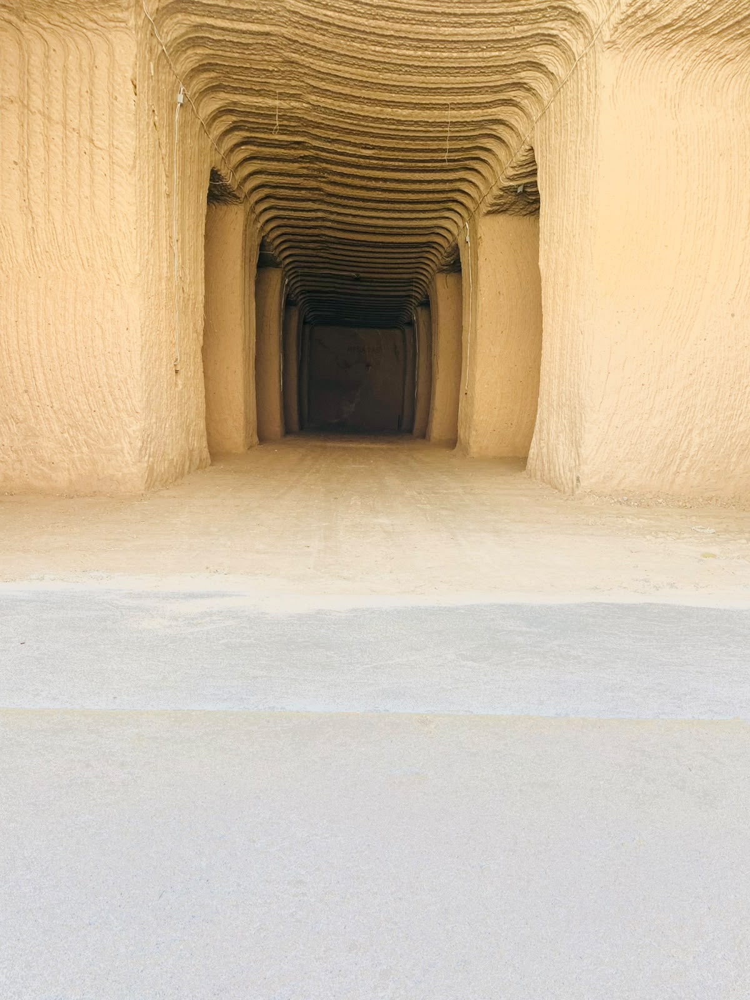
İşlerimizden kareler
Yürüttüğümüz depo açımı, kaya oyma, hafriyat ve nakliye çalışmalarından seçilmiş görseller.
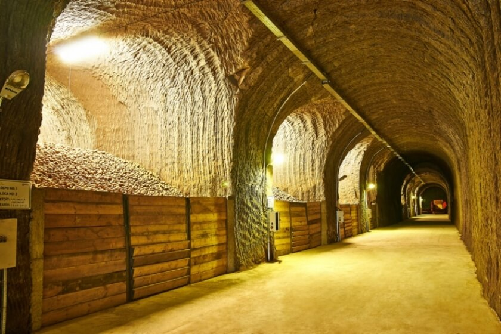
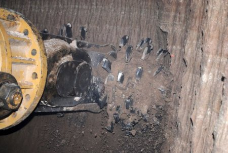
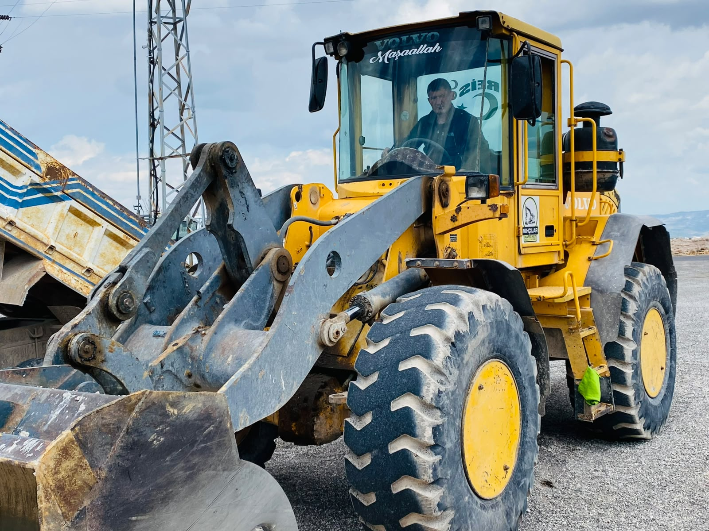
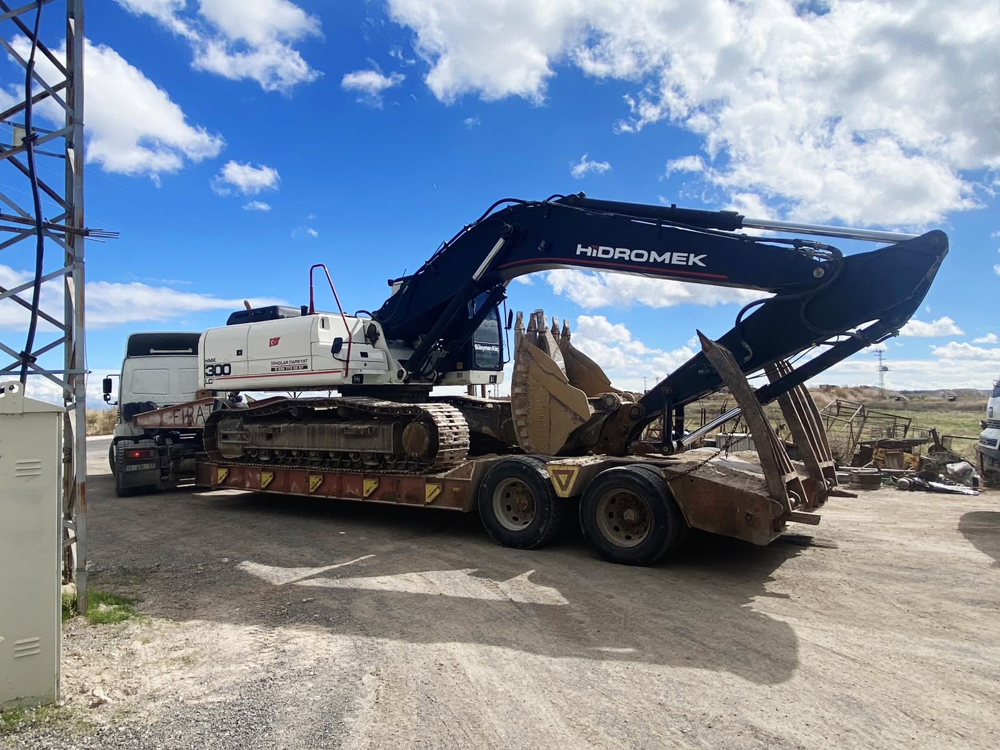
Hakkımızda
Mıhçılar Hafriyat, 2004 yılından bu yana Nevşehir ve çevresinde zorlu arazi koşullarını doğru okuyup kalıcı çözümlere dönüştürüyor.
Kayadan oyma otel inşaatları, doğal yeraltı soğuk hava deposu tesisleri, hafriyat, yıkım, temel kazı ve ağır nakliye çalışmalarında; deneyimli ekibimiz ve güçlü araç parkurumuzla her projeye işin gerektirdiği disiplinle yaklaşırız. Bizim için iyi iş; planlı başlayan, güvenle ilerleyen ve sahası düzenli teslim edilen iştir.
İletişim
Teklif, saha incelemesi ve hizmetlerimiz hakkında bilgi almak için ekibimize doğrudan ulaşabilirsiniz.
mihcilarhafriyat@gmail.com ↗